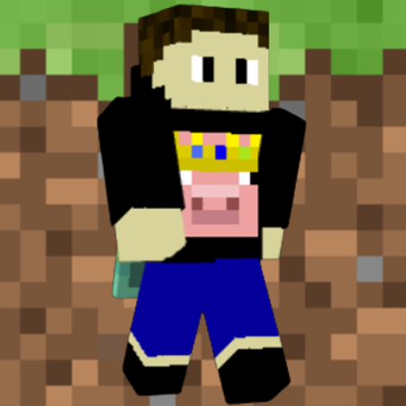

I (BeDarb) am a family friendly Minecraft Youtuber who occasionally posts Minecraft videos and Shorts. I do not plan on this ever becoming a full-time job, nor do I expect to ever make money from this channel. I do this purely for fun.
Channel Created: April 24th, 2024
100 Subscribers: July 31st, 2024
200 Subscribers: April 22nd, 2025
250 Subscribers: August 14th, 2025
300 Subscribers: March 22nd, 2026
400 Subscribers: soon (hopefully)
If you have any video suggestions or stuff like that, you can put it in the comments of my videos.